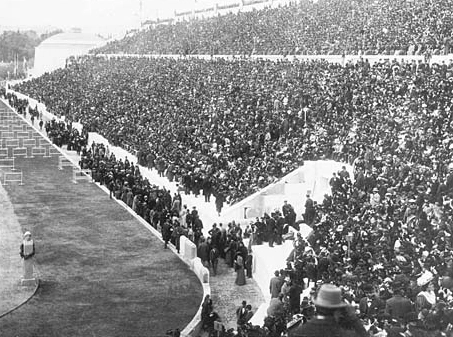

História das olimpíadas
As Olimpíadas modernas foram iniciadas em 1896 por Pierre de Coubertin em Atenas, revivendo os antigos Jogos
Olímpicos da Grécia Antiga. Desde então, ocorrem a cada quatro anos em diferentes cidades ao redor do mundo,
reunindo milhares de atletas de diversos países para competir em uma ampla gama de esportes. Além de promover o
espírito esportivo e a excelência atlética, as Olimpíadas têm um impacto cultural significativo, promovendo a
paz e a cooperação internacional.
